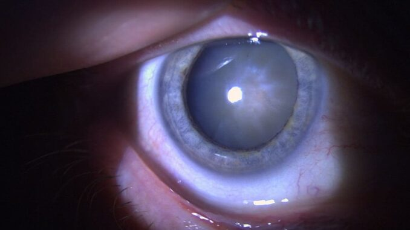
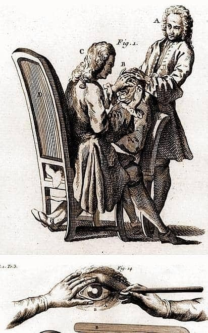

Operația de cataractă explicată. Ce este și de ce o facem
Înainte de a vorbi despre operație să spunem despre cataractă că aceasta este o afecțiune oculară. Care afectează cristalinul (lentila naturală a ochiului uman) și se caracterizează prin opacifierea acestuia. În final, va duce la pierderea transparenței și, prin urmare, la afectarea vederii.
Simptomele cataractei pot fi:
- vedere încețoșată;
- dificultate în a vedea culorile în mod clar;
- probleme cu vedere noaptea sau în lumina puternică;
- sensibilitate crescută la lumină.
Cauzele cataractei pot include îmbătrânirea, expunerea la razele ultraviolete, anumite boli, cum ar fi diabetul sau glaucomul, traumatisme oculare și utilizarea pe termen lung a anumitor medicamente.
Află mai multe despre simptome și apariția cataractei
Pentru cataractă, tratamentul este exclusiv prin operație. Prin intervenția chirurgicală cristalinul opacifiat este îndepărtat și înlocuit cu o lentilă artificială. Această procedură este sigură și eficientă și îmbunătățește semnificativ vederea și calitatea vieții persoanei afectate.
Astăzi, o operație de cataractă nu reprezintă nimic neobișnuit. Avantajele acesteia sunt certe, după cum se va vedea în continuarea acestui text.

Obiectivul operației – cristalinul
Cristalinul ochiului, scopul pentru care recurgem la operație și organul bolnav de cataractă, este o structură transparentă. Are formă de lentilă biconvexă și este situată în interiorul ochiului, imediat în spatele irisului și a pupilei. Rolul principal al cristalinului este de a ajuta la focalizarea imaginilor pe retină. Acest lucru se realizează prin schimbarea formei sale pentru a se adapta la distanțele diferite de obiecte.
Cristalinul este format din celule specializate, numite fibre cristaliniene, care conțin proteine și apă. Aceste fibre sunt dispuse în straturi concentrice, iar suprafața lor exterioară este acoperită de o membrană subțire numită capsula cristaliniană. Cristalinul este fixat pe poziție de procese ciliare prin intermediul fibrelor zonulare, situate în spatele irisului.
Pe măsură ce ochiul se concentrează asupra unui obiect situat la distanță diferită, procesele ciliare se contractă sau se relaxează. Astfel se modifică forma și poziția cristalinului și se face ajustarea focalizării. Această capacitate a cristalinului de a se adapta la distanțele diferite de obiecte se numește „acomodare”. Practic, cristalinul face acomodarea ochiului prin modificarea distanței focale. Asemănător cu obiectivele fotografice, dar superior acestora.
Implant de cristalin – lentila intraoculară
Implantul de cristalin reprezintă obiectivul principal al operației de cataractă. Este o procedură chirurgicală în care cristalinul natural al ochiului este îndepărtat și înlocuit cu un cristalin artificial. Acest procedeu va oferi pacientului capacitatea de a vedea clar.
În timpul operației, chirurgul va face o mică incizie în ochi și va îndepărta cristalinul opac afectat de cataractă. Apoi, un cristalin artificial este inserat în locul cristalinului natural, preluând rolul de lentilă pentru fiziologia ochiului. Cristalinul artificial poate fi monofocal sau multifocal, în funcție de nevoile pacientului și de recomandarea medicului oftalmolog.

Ce este lentila intraoculara
Lentila intraoculară (IOL) este de fapt cristalinul artificial care se implantează în timpul operației de cataractă în locul celui natural opacifiat. Există mai multe tipuri de IOL, monofocale sau multifocale, hidrofile sau hidrofobe.
Ca o paranteză, ar mai trebui spus că mai există o categorie de lentile intraoculare, care se deosebesc de cele implantate în operația de cataractă obișnuită. Acesta sunt implante fakice și lucrează împreună cu cristalinul natural care nu este afectat de cataracta. Este introdusă chirurgical în spatele irisului și are scopul de a corecta miopia, hipermetropia și astigmatismul.
Istoricul și siguranța operației de cataractă
Primele informații scrise despre cataractă apar în papirusul egiptean „Ebers”, aproximativ 1550 bC. Acesta descrie afecțiunea, printre alte cunoștințe de oftalmologie sau medicină generală, dar nu relatează despre operație.

Primul text despre o operație de cataractă reușită datează din 600 bC și se referă la chirurgul indian Sushruta. Acesta este scris în sanscrită și descrie tehnica folosită. Cu un ac se perforează ochiul prin umoarea apoasă și se ajunge la cristalin. Apoi, pacientul trebuie să expire astupându-și nările. Presiunea astfel creată va scoate cristalinul prin orificiul creat iar după câteva zile vederea i se va îmbunătăți.
În 1747 chirurgul Jacques Daviel este creditat ca fiind primul care face o operație de cataractă prin tehnica numită „coucher”. Incizia în cornee se făcea cu bisturiu și era mai mare de 10 mm. Oricum, absența tehnicilor aseptice și instrumentele rudimentare, mărimea inciziilor, toate au dus la o rată de succes scăzut. Astăzi, extracția critalinului se face prin facoemulsificare.
Un pas radical în operația de cataractă l-a făcut dr. Harold Ridley care în 1949 a făcut primul implant de cristalin. De fapt, marea inovație a britanicului a fost că nu s-a mulțumit doar cu extragerea cristalinului bolnav, ci a introdus și o lentilă intraoculară. Altfel spus, un corp străin și care era acceptat de organism.
Kai-yi Zhou a revoluționat și mai mult acest tip de operație, când cristalinul afectat de cataractă a fost înlocuit de o lentilă pliabilă. Efectul a fost deosebit: inciziile deveneau extrem de mici!
Operația de cataractă, respectiv procedura de transplant de cristalin este astăzi una comună și extrem de sigură, având o rată de succes de peste 99%. Pacienții își recâștigă vederea clară imediat după aceasta. Complicațiile chirurgiei cataractei sunt extrem de rare (sub 1% din cazuri) dar nu inexistente. Tocmai de aceea este important să discutați în detaliu cu medicul dumneavoastră. Să-i comunicați absolut toate informațiile relevante despre sănătatea dvs. Și mai ales, să faceți operația la timp, fără a lăsa cataracta să evolueze prea mult.